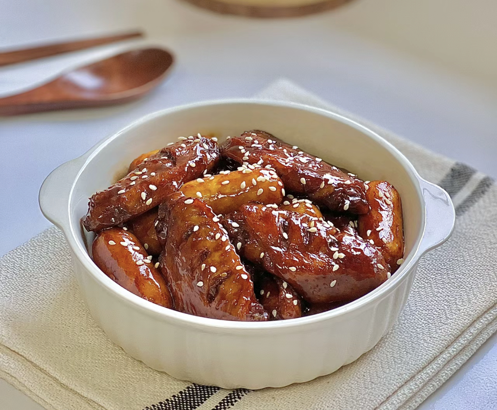
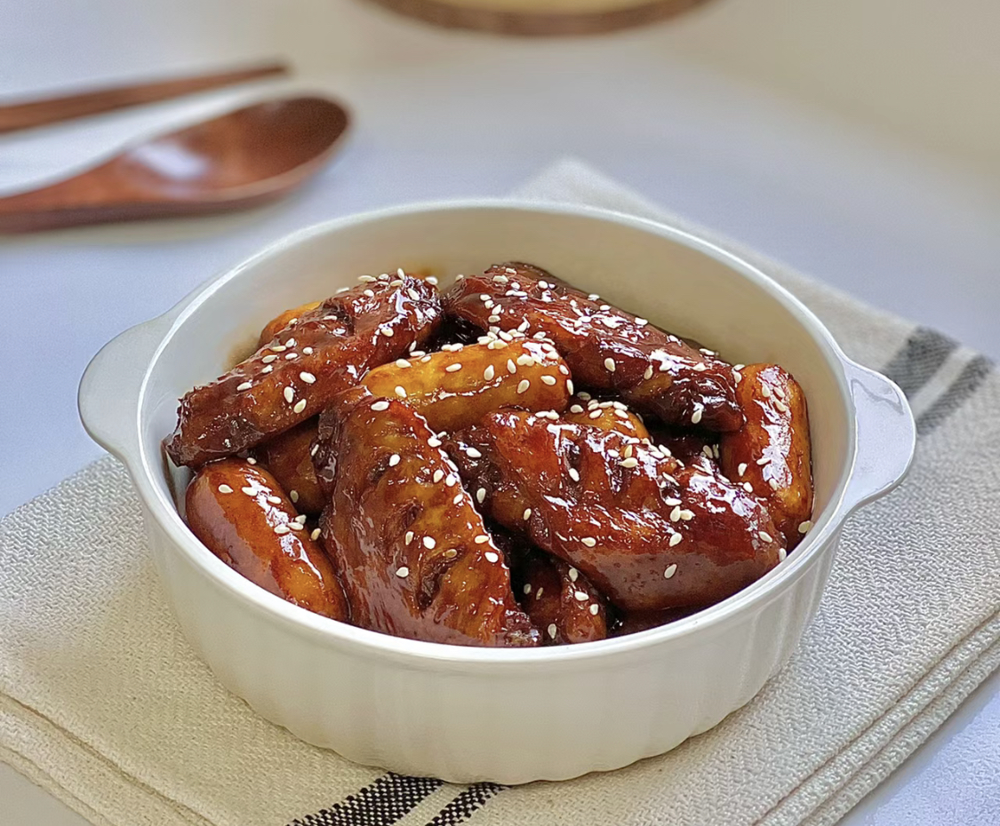

Swedish Pancakes
Origin: Sweden
Source: Kristi, true-north-kitchen.com
Category: Breakfast

Recipe Ingredients
- Butter
- Sugar
- Eggs
- Vanilla
- Milk
- Water
- Salt
- Flour
Recipe Steps
Combine all ingredients in a blender and blend until completely smooth.Transfer to the refrigerator to rest for at least 2 hours or up to 2 days.
Preheat the oven to 200 degrees if you plan to eat the pannkakor right away. Heat a 10 inch nonstick skillet over medium heat. Stir the batter briefly to recombine. Brush skillet with melted butter. Pick the skillet up off of the burner and quickly add ¼ cup of batter. Immediately begin swirling the batter around the skillet so that it coats the bottom of the pan. Continue swirling until the batter is just set. Return skillet to the burner. Cook until the pancake is golden brown in spots on the bottom, about 30 seconds. Use a thin spatula to loosen the pancake, flip it over continue to cook on the other side for about 30 seconds. Transfer to a plate. Cover with foil and transfer to oven to keep warm and repeat with remaining batter, wiping out skillet in between pancakes with paper towel as needed.
Serve with lingonberry jam and butter (see note below) or other desired toppings and/or fillings. See notes below for more information about making ahead of time and storing in the refrigerator or freezer.
Additional Food Images

Chinese Hot and Sour Soup
Origin: China
Source: Unknown
Category: Soup

Chinese Hot and Sour Soup (酸辣汤) is a popular and flavorful soup known for its spicy and tangy taste. It's made with a variety of ingredients including tofu, mushrooms, and bamboo shoots.
Recipe Ingredients
- Tofu
- Mushrooms
- Water
- Pork
- Bamboo shoots
- Soy Sauce
Recipe Steps
Boil.
Simmer.
Cooking.
Dipping Sauces.
Additional Food Images


Coca-Cola Chicken Wings
Origin: China
Source: Family Recipe from Sisi Chen
Category: Main Dish

I learnt how to cook Coca-Cola chicken wings from my mother, and I've since tweaked her recipe to better suit my family's palate, making it less sweet. While the cooking process remains straightforward, the result is incredibly flavorful, and once you've tried it, you'll understand its delicious appeal!
Recipe Ingredients
- Chicken Wings
- Scallions
- Ginger Slices
- Cooking Wine
- Dark Soy Sauce
- A can of coke
Recipe Steps
Wash and place chicken wings in a bowl.
Add scallions, ginger slices, cooking wine, dark soy sauce and salt to the washed chicken wings, and mix them well.
Cover the bowl with plastic wrap and marinate the chicken wings for 1 hour.
Put the right amount of oil in the pot, and put the marinated chicken wings into the pot and fry it until golden brown on both sides.
After fry the chicken wings until golden brown on both sides, then pour a can of coke into the pan and bring to a boil.
Continue to cook for an additional 2-3 minutes until the glaze has thickened and coats the wings nicely.
Transfer the Coca-Cola glazed chicken wings to a serving platter.
Additional Food Images

 
